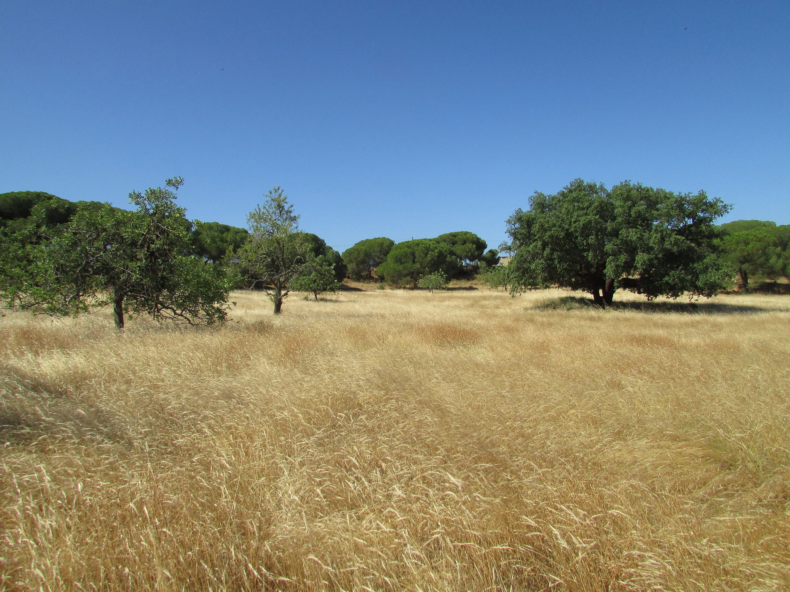
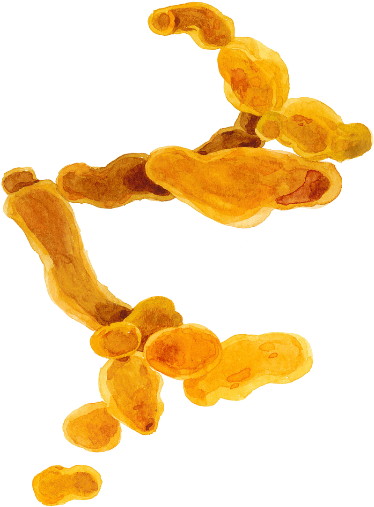
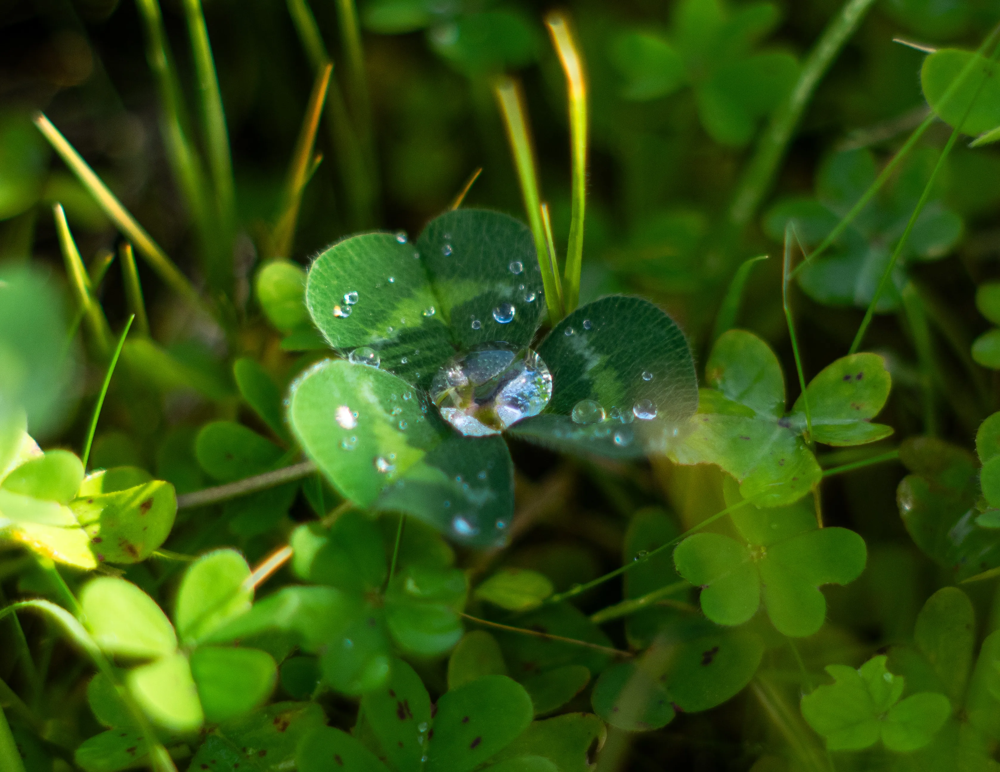
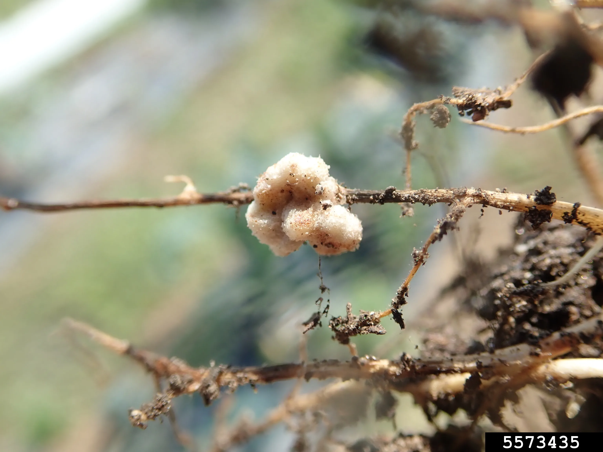

Between the oaks, the montado is pasture — and the best of it is thick with clover. Every clover plant is a small nitrogen factory, and each factory runs only because a bacterium agreed to move in: Rhizobium leguminosarum, the fast rhizobium of the clovers, vetches, peas and faba beans.
The partnership begins as a conversation. The root leaks flavonoids into the soil; the right bacterium answers with Nod factors, a molecular password; a root hair, hearing it, curls around the cell like a shepherd's crook and lets it in through a thread the plant builds inward. Where the thread ends, a nodule forms.
Inside, the bacterium becomes something else — a bacteroid, swollen and dedicated, running nitrogenase to turn air into ammonia at ordinary temperature and pressure, a feat industry can only match with furnace heat. In return, the plant feeds it sugar. Two biovars split the work: trifolii for the clovers, viciae for the vetches and peas.
Since antiquity, these legumes have restored tired ground without a bag of fertiliser. To improve a montado pasture, in practice, is often to improve this bacterium — to match the right rhizobia to Mediterranean clovers, and let the soil feed itself.


Clover photo via Wikimedia Commons — open ↗
Root-nodule photo via Wikimedia Commons — open ↗The Nod-factor signal is so specific that it decides which bacterium may enter which plant — a lock and key refined over a hundred million years of legumes and their rhizobia growing up together.